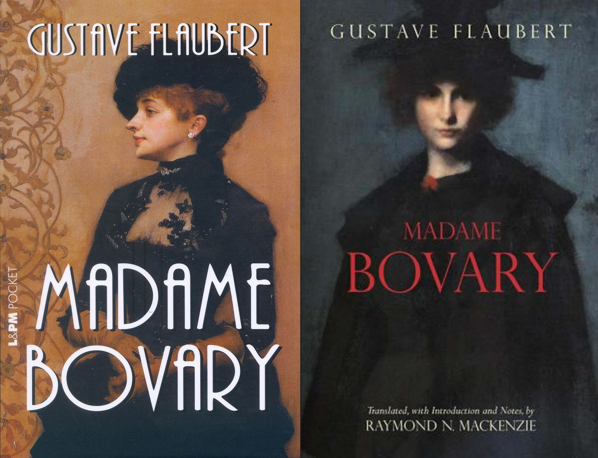

Madame Bovary de Gustave Flaubert

O carte care te şochează, te readuce la realitate
Unul dintre marii scriitori francezi, Gustave Flaubert scrie, în mult controversatul său roman Madame Bovary,
despre decăderea morală, a femeii şi a omului în general.
Deşi romanul se deschide cu descrierea copilăriei şi tinereţii lui Charles Bovary, nu trece mult până acesta îi cedează
rolul de protagonist Emmei, care devine doamna Bovary prin căsătorie. Frumoasă, visătoare, chiar naivă, plictisită de existenţa
şi căsătoria sa monotonă, Emma visează la poveşti de dragoste ca cele întâlnite doar în cărţi, şi astfel începe decăderea sa, de
la priviri şi plimbări pe furiş, ajungând ca în final să se deplaseze într-un echilibru precar pe un adevărat păienjeniş de minciuni,
trădări şi josnicii.
„Înainte de căsătorie, credea că iubeşte; dar cum fericirea ce ar fi trebuit să rezulte din această dragoste nu venea, însemna
că s-a înşelat, gândea ea. Şi Emma încerca să afle ce se înţelege exact în viaţă prin cuvintele fericire, pasiune sau beţia simţurilor,
care îi păruseră atât de frumoase în cărţi.”
Emma este femeia veşnic nefericită, capricioasă, cu un soţ iubitor dar pe care nu-l apreciază şi care o plictiseşte.
Madame Bovary este o carte frumoasă, ce merită citită, ca orice roman clasic, dar faţă de care eu cred că totuţi se deosebeşte prin
atmosfera sa, ce poate nu este pe placul oricui – personal, văd o aură mohorâtă, tristă, chiar tragică, plutind în jurul cărţii, aură ce,
deşi mi-a plăcut cartea, nu prea mă îmbia spre lectură.